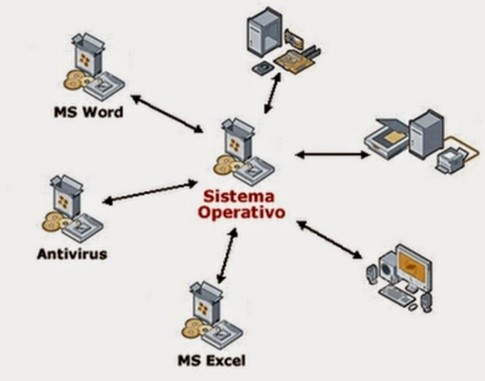
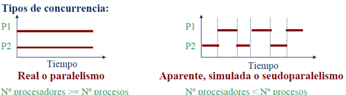

Se define como la capacidad de activar múltiples procesos a la vez. Se dice que varios procesos son concurrentes
o paralelos cuando son procesados al mismo tiempo, es decir, que para ejecutar uno de ellos no hace falta que se
haya ejecutado otro.
Un sin número de modelos matemáticos han sido desarrollados para cálculos de la
concurrencia en general incluyendo redes de Petri, procesos Calculi, el modelo máquina de accesos aleatorios en
paralelo, el Modelo Actor y el Lenguaje Reo.
En el caso de los sistemas multiprocesador, esta ejecución simultánea podría conseguirse completamente, ya que
podremos asignarle un proceso distinto a cada uno de los procesadores para realizar su respectiva ejecución. En
caso de tener un solo procesador se producirá un intercalado de las instrucciones de ambos procesos, de manera
que se tendrá la sensación de que existe un paralelismo en el sistema.
| Tipos de Concurrencia | |
|---|---|
|  | |
| Real/Paralelismo | Aparente, simulada o seudoparalelismo |
| Se alternan varios procesos en un mismo procesador, y se pueden encontrar más procesos que procesadores. Por ende, los procesos se multiplican en el tiempo. | Se produce una ejecución en paralelo, y cada proceso se ejecuta en un mismo procesador. También se denomina paralelismo. |
Modelo de actores
El modelo de actores facilita el diseño de sistemas basados en concurrencia. Se fundamenta en pequeñas
entidades denominadas actores que se envían mensajes y se comportan de una forma definida frente a la
recepción de cada uno.
La construcción de actores sirve para encargar labores, lo que es eficaz para aliviar responsabilidades y
diseñar un óptimo modelo de actores, intentando que cada uno tenga el menor número de competencias viable, de
tal forma que quede claro qué mensajes debería procesar cada actor, cómo tienen que reaccionar a los mismos y
cómo tienen que manejar errores.
Características:
| Acelera la ejecución de cálculos | División de cálculos en procesos ejecutados en paralelo. Ejemplos: Simulaciones, Mercado eléctrico, Evaluación de carteras financieras. |
|---|---|
| Facilita la programación | Diversas tareas se pueden estructurar en procesos separados. Servidor Web: Un proceso encargado de atender a cada petición. |
| Mejora el aprovechamiento de la CPU | Se aprovechan las fases de Entrada/Salida de una aplicación para procesamiento de otras. |
| Mejora la interactividad de las aplicaciones | Se pueden separar las tareas de procesamiento de las tareas de atención de usuarios. Ejemplo: Impresión y edición. |
En ambos tipos de procesos (independientes y cooperantes), puede producirse una serie de interacciones entre ellos y pueden ser de dos tipos: